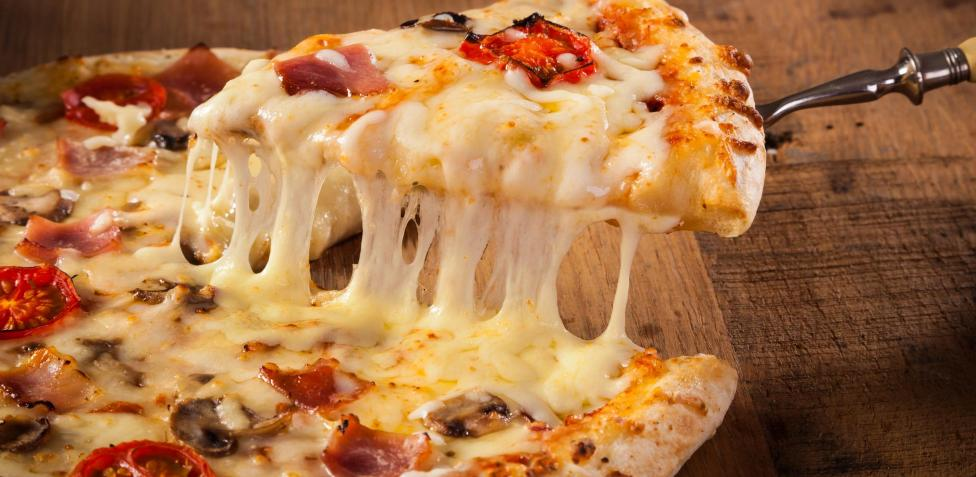

Pizza

Every great pizza begins with a great pizza crust. Some like it thin and crispy,
while others prefer a thick and soft crust. This homemade pizza crust has it all:
soft & chewy with a delicious crisp and AWESOME flavor.
- Yeast
- Water
- Flour
- Oil
- Salt
- Sugar
- Make the dough: Mix the dough ingredients together by hand or use a hand-held or stand mixer.
Do this in steps as described in the written recipe below.
- Knead: Knead by hand or with your mixer. I like doing this by hand.
- Place dough into a greased mixing bowl, cover tightly, and set aside to rise for about
90 minutes or overnight in the refrigerator.
- Punch & shape: Punch down risen dough to release air bubbles. Divide in 2. Roll dough out into a
12-inch circle. Cover and rest as you prep the pizza toppings.
- Top it: Top with favorite pizza toppings.
- Bake: Bake pizza at a very high temperature for only about 15 minutes.